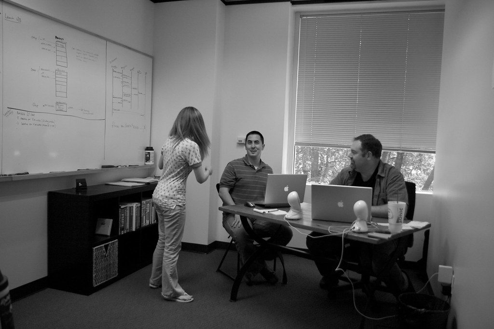

Open source Python library
Natural language to SQL, safely.
Questions in, read-only SQL out. Every statement is parsed and validated before it touches your database.
Every failure mode, measured.
The validator was run against hostile and legitimate inputs. Results below are real, from the test suite, not marketing.
Allowed
-
SELECT name FROM usersplain read -
WITH x AS (SELECT 1) SELECT * FROM xread-only CTE -
SELECT * FROM t WHERE id IN (SELECT 1)subquery
Rejected
-
WITH x AS (DELETE FROM users RETURNING *) SELECT * FROM xtyped SELECT, still caught -
SELECT 1; DROP TABLE userstwo statements -
EXPLAIN SELECT 1not SELECT -
DROP TABLE usersschema write -
""empty query
The first rejected row is the one that matters. sqlparse types that data-modifying CTE as
SELECT, so a top-level type check alone would delete every row. A token-level keyword walk stops it.
Covered by test_data_modifying_cte_rejected.
A prompt is not a security boundary. A parser is.
Chosen
Static analysis with sqlparse. The same string always gets the same verdict, and a
reviewer's objection is answered by pointing at code rather than re-running a model.
Cost, stated honestly
sqlparse is not a full SQL parser. Some dialect syntax gets rejected, and the
denylist does not replace a read-only database role. Both guards are needed.
Four layers, one failure shape.
- get_schema()
- Introspects live tables and columns so the prompt reflects the real database.
- validate_sql()
- Rejects empty, multi-statement, non-SELECT, and write-keyword queries before execution.
- execute_query()
- Bounds input size, executes, caps rows, and reports truncation instead of dropping it silently.
- _generate_and_run()
- Single LLM path. Model failures become
{"error": ...}too, so callers handle one shape.
Configuration
Five knobs, sane defaults.
max_rows
1000
Result cap. Larger results set truncated: true.
timeout_s
30
SQLite busy timeout. Postgres needs a dialect-specific statement_timeout.
max_sql_chars
20000
Rejects oversized SQL and oversized questions before any database or LLM call.
model
gpt-4o-mini
Used for generation and for one self-correction attempt on failure.
llm_timeout_s
30
Bounds the OpenAI request so a hung model call cannot stall the caller.
Every method returns a dict.
Expected failures never raise. Callers branch on one key.
{"success": true, "rows": [...], "truncated": false}
{"error": "Unsupported statement type: DROP"}
Running takes a minute.
-
Install
pip install -r requirements.txt -
Configure
cp .env.example .env export OPENAI_API_KEY=sk-... -
Run
python -m pytest test_assistant.py -v # 11 passed, 12 subtests, no key needed
Tests run without an API key. The LLM client is created lazily, only when an actual LLM call happens.